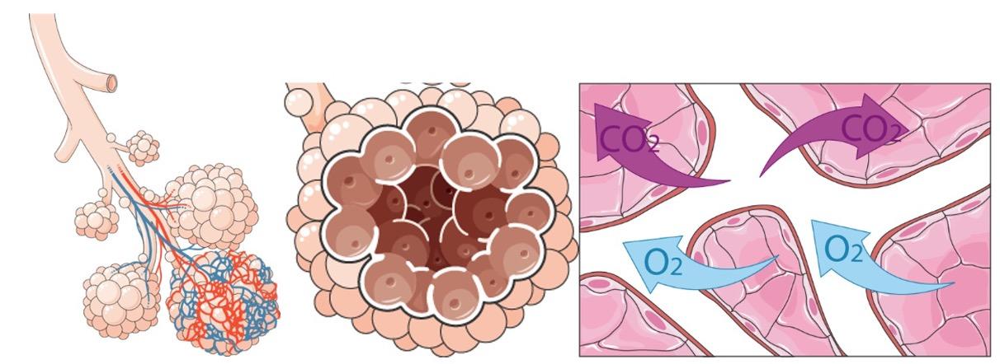

A função dos brônquios e bronquíolos é conduzir o ar para dentro dos pulmões e de volta para fora. Quando o ar chega aos alvéolos, ocorre a troca do dióxido de carbono e do oxigênio por difusão através dos capilares sanguíneos, processo conhecido como hematose.
A hematose.

Fonte: Servier Medical Art by Servier (smart.servier.com), licenciada sob uma licença Creative Commons Attribution 3.0 Unported.